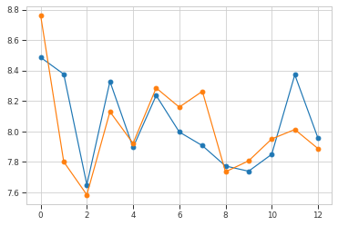
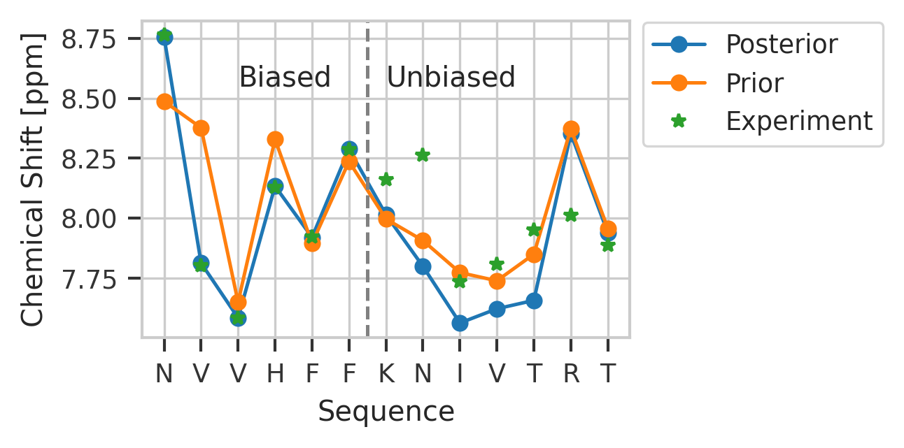

MBP Protein NMR Example
import pandas as pd
import numpy as np
import matplotlib.pyplot as plt
import seaborn as sns
import tensorflow as tf
import maxent
sns.set_context("paper")
sns.set_style(
"whitegrid",
{
"xtick.bottom": True,
"ytick.left": True,
"xtick.color": "#333333",
"ytick.color": "#333333",
},
)
# plt.rcParams["font.family"] = "serif"
plt.rcParams["mathtext.fontset"] = "dejavuserif"
colors = ["#1b9e77", "#d95f02", "#7570b3", "#e7298a", "#66a61e"]
import pynmrstar
from functools import partialmethod
from tqdm import tqdm
tqdm.__init__ = partialmethod(tqdm.__init__, disable=True)
2022-04-03 21:49:44.930742: W tensorflow/stream_executor/platform/default/dso_loader.cc:64] Could not load dynamic library 'libcudart.so.11.0'; dlerror: libcudart.so.11.0: cannot open shared object file: No such file or directory; LD_LIBRARY_PATH: /opt/hostedtoolcache/Python/3.8.12/x64/lib
2022-04-03 21:49:44.930784: I tensorflow/stream_executor/cuda/cudart_stub.cc:29] Ignore above cudart dlerror if you do not have a GPU set up on your machine.
# load data from brmrb
bmrb = pynmrstar.Entry.from_database(20062, convert_data_types=True)
cs_result_sets = []
for chemical_shift_loop in bmrb.get_loops_by_category("Atom_chem_shift"):
cs_result_sets.append(
chemical_shift_loop.get_tag(
["Comp_index_ID", "Comp_ID", "Atom_ID", "Atom_type", "Val", "Val_err"]
)
)
ref_data = pd.DataFrame(
cs_result_sets[0], columns=["id", "res", "atom", "type", "shift", "error"]
)
ref_resids = ref_data[ref_data.atom == "H"].id.values
ref_data[ref_data.atom == "H"].head(25)
| id | res | atom | type | shift | error | |
|---|---|---|---|---|---|---|
| 0 | 1 | GLU | H | H | 8.131 | 0.001 |
| 6 | 2 | ASN | H | H | 8.763 | 0.001 |
| 19 | 4 | VAL | H | H | 7.801 | 0.003 |
| 28 | 5 | VAL | H | H | 7.584 | 0.001 |
| 37 | 6 | HIS | H | H | 8.130 | 0.004 |
| 43 | 7 | PHE | H | H | 7.922 | 0.001 |
| 50 | 8 | PHE | H | H | 8.286 | 0.002 |
| 57 | 9 | LYS | H | H | 8.160 | 0.001 |
| 70 | 10 | ASN | H | H | 8.264 | 0.001 |
| 76 | 11 | ILE | H | H | 7.735 | 0.001 |
| 87 | 12 | VAL | H | H | 7.807 | 0.004 |
| 96 | 13 | THR | H | H | 7.951 | 0.002 |
| 109 | 15 | ARG | H | H | 8.013 | 0.001 |
| 118 | 16 | THR | H | H | 7.888 | 0.001 |
HAVE_MD_FILE = False
ref_hdata = ref_data[ref_data.atom == "H"]
# cut GLU because proton type mismatch
ref_hdata = ref_hdata["shift"].values[1:].astype(float)
resnames = ref_data[ref_data.atom == "H"].res[1:]
if HAVE_MD_FILE:
data = pd.read_csv("./cs.csv")
data.head(10)
# only need weights, so we extract only shifts that will be biased
hdata_df = data[data.names == "HN"]
hdata_df = hdata_df[hdata_df["resids"].isin(ref_resids)]
hdata_c = hdata_df.confident.values.reshape(len(data.frame.unique()), -1)
hdata = hdata_df.peaks.values.reshape(len(data.frame.unique()), -1)
assert hdata.shape[-1] == ref_hdata.shape[0]
np.savez("mbp_files/mbp_cs.npz", hdata=hdata, hdata_c=hdata_c)
data = np.load("mbp_files/mbp_cs.npz")
hdata, hdata_c = data["hdata"], data["hdata_c"]
plt.plot(np.mean(hdata, axis=0), "o-")
plt.plot(ref_hdata, "o-")
plt.show()

# fill in unconfident peaks with mean
hdata_m = np.sum(hdata * hdata_c, axis=0) / np.sum(hdata_c, axis=0)
total_fill = 0
for i in range(hdata.shape[1]):
hdata[:, i][~hdata_c[:, i]] = hdata_m[i]
total_fill += np.sum(~hdata_c[:, i])
print("Filled", total_fill)
Filled 0
plt.plot(np.mean(hdata, axis=0), "o-")
plt.plot(ref_hdata, "o-")
plt.show()
# make restraints
restraints = []
do_restrain = range(len(ref_hdata) // 2)
for i in do_restrain:
restraints.append(
maxent.Restraint(lambda h, i=i: h[i], ref_hdata[i], prior=maxent.Laplace(0.05))
)
model = maxent.MaxentModel(restraints)
model.compile(tf.keras.optimizers.Adam(0.1), "mean_squared_error")
history = model.fit(hdata, epochs=500, verbose=0)
2022-04-03 21:49:48.762821: W tensorflow/stream_executor/platform/default/dso_loader.cc:64] Could not load dynamic library 'libcuda.so.1'; dlerror: libcuda.so.1: cannot open shared object file: No such file or directory; LD_LIBRARY_PATH: /opt/hostedtoolcache/Python/3.8.12/x64/lib
2022-04-03 21:49:48.762856: W tensorflow/stream_executor/cuda/cuda_driver.cc:269] failed call to cuInit: UNKNOWN ERROR (303)
2022-04-03 21:49:48.762882: I tensorflow/stream_executor/cuda/cuda_diagnostics.cc:156] kernel driver does not appear to be running on this host (fv-az371-708): /proc/driver/nvidia/version does not exist
2022-04-03 21:49:48.763233: I tensorflow/core/platform/cpu_feature_guard.cc:151] This TensorFlow binary is optimized with oneAPI Deep Neural Network Library (oneDNN) to use the following CPU instructions in performance-critical operations: AVX2 FMA
To enable them in other operations, rebuild TensorFlow with the appropriate compiler flags.
plt.plot(history.history["loss"])
print(history.history["loss"][-1])
2.1977152848360335e-15
np.mean(np.abs(np.sum(hdata * model.traj_weights[..., np.newaxis], axis=0) - ref_hdata))
0.1292922973632812
model.lambdas
<tf.Variable 'maxent-lambda:0' shape=(6,) dtype=float32, numpy=
array([-3.479852 , 4.554573 , 0.1584214, 1.4714806, -0.7225197,
0.8692107], dtype=float32)>
plt.plot(model.traj_weights)
[<matplotlib.lines.Line2D at 0x7f2043f946d0>]
plt.figure(figsize=(3, 2), dpi=300)
seq_dict = {
"CYS": "C",
"ASP": "D",
"SER": "S",
"GLN": "Q",
"LYS": "K",
"ILE": "I",
"PRO": "P",
"THR": "T",
"PHE": "F",
"ASN": "N",
"GLY": "G",
"HIS": "H",
"LEU": "L",
"ARG": "R",
"TRP": "W",
"ALA": "A",
"VAL": "V",
"GLU": "E",
"TYR": "Y",
"MET": "M",
}
plt.plot(
np.sum(hdata * model.traj_weights[..., np.newaxis], axis=0), "o-", label="Posterior"
)
plt.plot(np.mean(hdata, axis=0), "o-", label="Prior")
plt.plot(ref_hdata, "*", label="Experiment")
plt.axvline(x=len(ref_hdata) // 2 - 0.5, color="gray", linestyle="--")
plt.xticks(range(len(ref_hdata)), [seq_dict[r] for r in resnames])
plt.legend(loc="center left", bbox_to_anchor=(1.0, 0.8))
plt.text(len(ref_hdata) // 5, 8.55, "Biased")
plt.text(len(ref_hdata) // 2, 8.55, "Unbiased")
plt.xlabel("Sequence")
plt.ylabel("Chemical Shift [ppm]")
plt.savefig("protein.pdf")

print("most favored clusters", np.argsort(model.traj_weights)[-3:])
most favored clusters [2158 2221 2147]